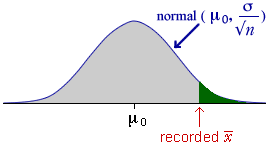

Hypotheses and p-value
We initially assume that the population standard deviation σ is a known value. The null hypothesis is usually
H0 : µ = µ 0
The test is based on the sample mean,  .
This
has a distribution that is approximately normal and has mean and standard
deviation
.
This
has a distribution that is approximately normal and has mean and standard
deviation
| = μ |
| = |
Since the distribution of  is fully known when H0 is true, a tail area of its distribution
gives the p-value for the test. The tail of the distribution to use
depends on the form of the alternative hypothesis.
is fully known when H0 is true, a tail area of its distribution
gives the p-value for the test. The tail of the distribution to use
depends on the form of the alternative hypothesis.
